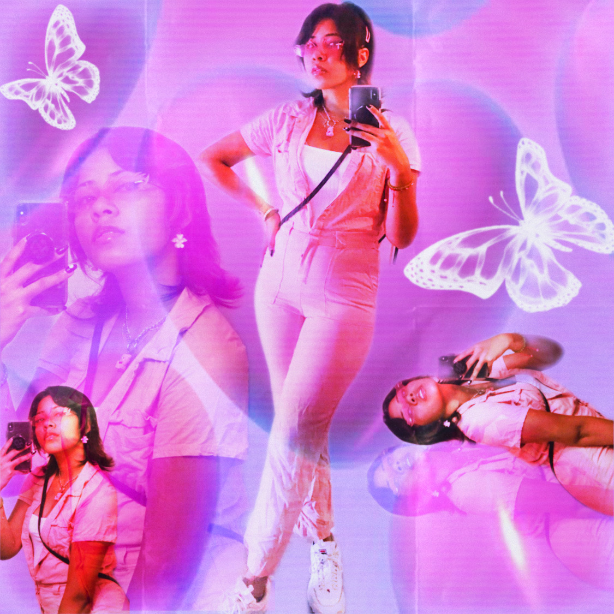
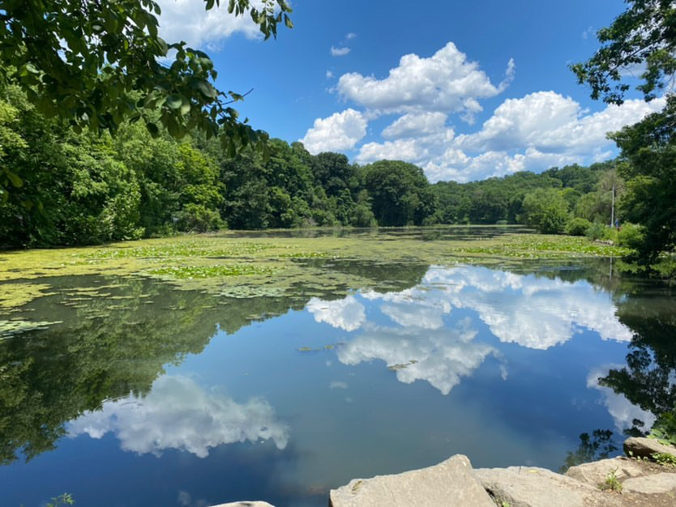

All concepts created and edited by me. My style comes from trends I see from social media, such as Cyber y2k or Soft girl. I tend to express myself most when it come too clothes or my hair, and I make it a fun little photoshoot together with my bestfriend. If you are into fashion and a photoshoot's check out my work!
Photography



